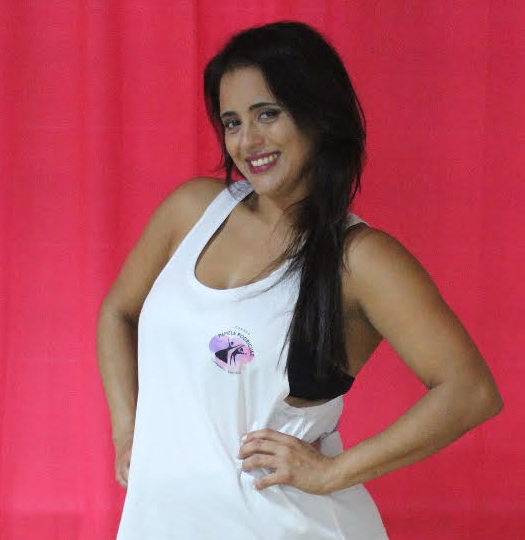

DANZA PAMELA RODRIGUEZ
Soy profesora y artista de danzas clásicas, jazz, española y folklore tradicional.
Directora: Academia de Danza Pamela Rodríguez N°1064 EDD. Soy directora del ballet de folklore LA FRONTERIZA, con el que nos hemos presentado en distintas provincias del país.
Me desempeño como instructora de ritmos urbanos y latinos.
También me desarrollo como maquilladora profesional, artística y social.
Estudios:
- Profesora superior de danzas Clásicas año 2000
- Profesora superior de danzas Españolas año 2000
- Profesora superior de danzas Folclóricas Argentinas 2006
- Profesora de Danzas Jazz 2013
- Cursando Profesorado de Flamenco y danza Estilizada
- Instructora de ritmos urbanos 2015
- Secretaria de Unidos por la danza 2015
- Diplomatura Universitaria en Danzas Folclóricas y la Escena 2022
Cursos:
- Curso de danzas Moderm Jazz en el instituto Nina Fuentes de Gualeguaychú año 2004
- Curso de gimnasia: Aeróbica, step y Localizada en el gimnasio new life de Gualeguaychú año 2004
- Seminario de danzas contemporánea con JOAO PIRAHY AÑO 2012
- Seminario de danzas Moderm jazz/Pop con el prof. Rubén Rodríguez de la academia de Laura Fidalgo Bs As 2012
- Curso de danzas Jazz con la prof. Miriam Simian 2013
- Seminario de Flamenco y danzas Estilizada Prof. Paola Yaniz Oriozabala. 2013
- Seminario de Apreciación musical para la calidad del movimiento e improvisación dictado por el Profesor presidente de la CIAD. Rodolfo solmoirago agosto 2014
- Instructorado de ritmos urbanos a cargo de Universal Dance. Profesores: Martin Galvan, Daisy Micielli, Gaby Pardo, Gimena Aguirre, Marcela Avila, Victoria Miguez. 2015
- Seminario de danzas contemporánea con JOAO PIRAHY AÑO 2015.
- Curso Intensivo de Ritmos Latinos 2020
